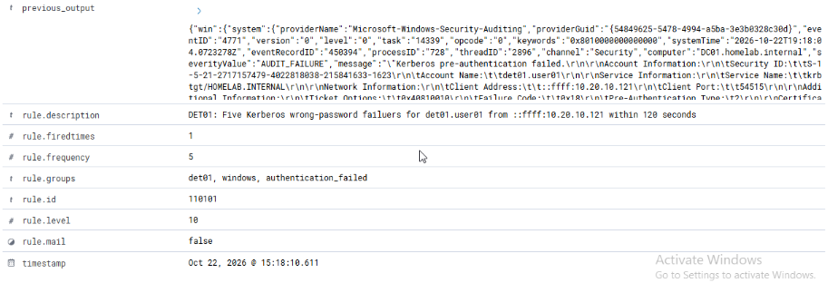
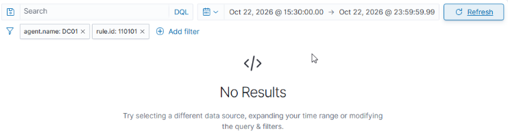
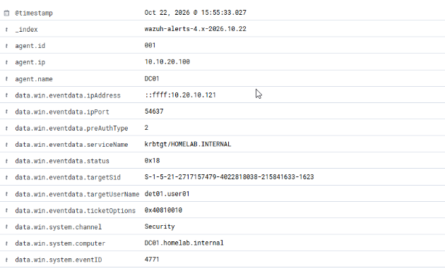
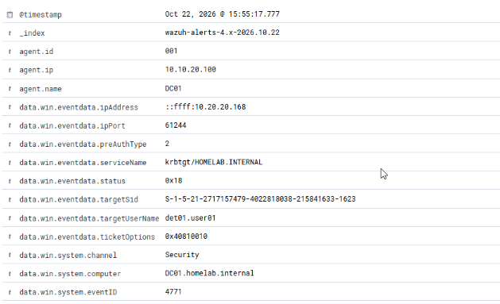

03 / DET01
Authentication Attack Detection & Investigation
A detection-engineering project where I built and validated Wazuh correlation logic for repeated Kerberos authentication failures, then tested the rule against multiple boundary conditions.
Balcom Insurance is a fictional company I use to give the lab a realistic structure. All authentication tests used dedicated accounts in my personal homelab.
THE OBJECTIVE
Turn existing telemetry into a tested detection
SOC01 gave me centralized Windows telemetry. DET01 was the next step: select a useful authentication event, write correlation logic, and test both the condition that should fire and the conditions that should stay quiet.
I generated controlled failures with runas from IT-PC01 and SALES-PC01. DC01 recorded Windows Security Event 4771, and its Wazuh agent sent the events to WAZUH01.
0x18, the wrong-password condition exercised in these tests. The client address inside the event identifies the source workstation; the Wazuh agent remains DC01 because the domain controller recorded the Kerberos failure.DETECTION DESIGN
One rule identifies the event. One rule groups it.
| Rule | Purpose | Tested condition |
|---|---|---|
| 110100 Level 5 | Base event | Windows Event 4771 with status 0x18 |
| 110101 Level 10 | Correlation alert | Five matches of 110100 within 120 seconds, grouped by target username and client IP address |
I chose both grouping fields deliberately. Matching only the account could combine activity from unrelated workstations. Matching only the source could combine failures against different accounts.
VALIDATION PLAN
I tested the alert and its boundaries
| Scenario | Controlled input | Observed result |
|---|---|---|
| Positive | Five failures, same account and source, within 120 seconds | 110101 fired |
| Below threshold | Four failures, same account and source | Four 110100 alerts; no 110101 |
| Source separation | Two failures from IT-PC01 and three from SALES-PC01 against one account | Five 110100 alerts; no 110101 |
| Time window | Two failures, wait more than 120 seconds, then three more | Five 110100 alerts; no 110101 |
| Account separation | Two failures for user01 and three for user02 from one source | Five 110100 alerts; no 110101 |
The positive alert proved the correlation path worked. The four negative tests showed that the count, source, timing, and account conditions held in the scenarios I tested.
SELECTED EVIDENCE
Four screenshots that prove the detection behavior
The webpage keeps only the strongest evidence for a quick technical review. The PDF contains the complete five-test evidence sequence, event timeline, troubleshooting notes, and supporting screenshots.








TROUBLESHOOTING & INVESTIGATION
The useful work was in checking the assumptions
The expected alert was missing
I checked the test command and the actual 4771 event before changing the rule. A command typo had prevented the intended test.
The ruleset test returned rule 1002
The pasted full_log decoded as generic JSON in that test session, while the live Windows pipeline used windows_eventchannel. I treated that as a test-context mismatch and validated the rule with controlled live events.
Search totals did not match my attempts
I checked the absolute time range, rule filter, account, source, and event records. One timing test only contained three generated failures, so I reset the account state and repeated the complete five-event test.
DC01 appeared as the agent IP
I followed data.win.eventdata.ipAddress inside the Windows event. DC01 records Kerberos failures caused by other hosts, so its Wazuh agent address is not the client grouping key.
How I would triage this alert
- Confirm Event 4771, status 0x18, the target account, source address, the current event, and
previous_output. - Identify the expected user and workstation activity, including ordinary typing mistakes or stale service credentials.
- Review nearby successful logons, account lockouts, and other events from the same source.
- Document the evidence and investigation result before recommending a response.
OUTCOME & LIMITS
A small detection with a clear, tested scope
DET01 met its lab objective. Five matching wrong-password Kerberos failures produced the correlation alert, while the four boundary tests remained quiet and still showed the base telemetry.
The behavior maps to MITRE ATT&CK T1110.001, Password Guessing. This is an analytical mapping of the test behavior, not a claim that ATT&CK metadata was added to the XML.
My biggest takeaway was to prove the quiet cases as carefully as the firing case. Fixed time ranges, separate rule filters, readable table columns, and supporting record IDs made the validation much easier to defend.
PROJECT OUTCOME
DET01 is complete and validated.
The full PDF contains the rule design, event timeline, all five tests, troubleshooting notes, analyst triage steps, references, and limitations.